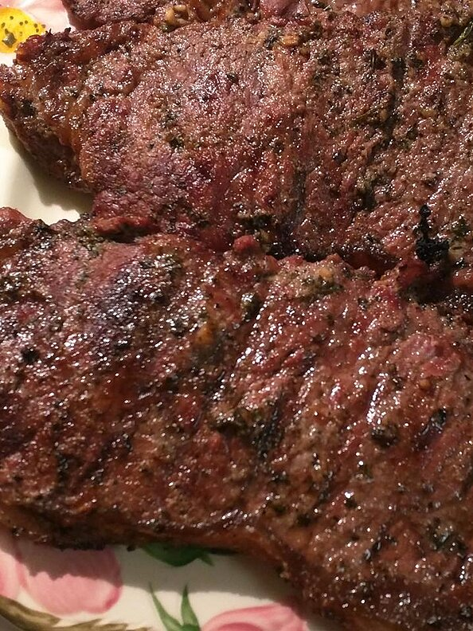

Beef Steak

Description
This is a beef steak marinade recipe by Kookie check it out
Ingredients
- ⅓ cup soy sauce
- ½ cup olive oil
- ⅓ cup fresh lemon juice
- ¼ cup Worcestershire sauce
- 1 ½ tablespoons garlic powder
- 3 tablespoons dried basil
- 1 ½ tablespoons dried parsley flakes
- 1 teaspoon ground white pepper
- ¼ teaspoon hot pepper sauce (Optional)
- 1 teaspoon dried minced garlic (Optional)
Steps
- Place the soy sauce, olive oil, lemon juice, Worcestershire sauce, garlic powder, basil, parsley, and pepper in a blender. Add hot pepper sauce and garlic, if desired. Blend on high speed for 30 seconds until thoroughly mixed.
- Pour marinade over desired type of meat. Cover, and refrigerate for up to 8 hours. Cook meat as desired.